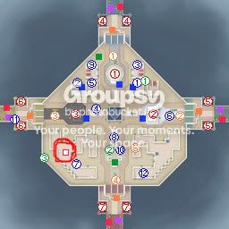

ขอถามหน่อยนะครับ
1 คือ ว่า การเอาpetไปอัพเกรด (ล้ม) มันจะช่วยอะไรด้านไหน
หรือเพิ่มอะไรบ้างครับ
2 คือ Driver (ไขควง)หาจากไหนครับ อันที่ไม่มีคอปเปอร์ หรือซิวเวอร์นำหน้านะครับ
ขอบคุณครับ + +
คำถามปลีกย่อยขอให้มาตั้งในกระทู้นี้คะ ตอบวันต่อวันคะ
 โดย ECO » จันทร์ 20 ส.ค. 2007 8:48 pm
โดย ECO » จันทร์ 20 ส.ค. 2007 8:48 pm

http://board.onenet.co.th/viewtopic.php?p=382619#382619
thanyapol เขียน:4 leaves cover ดรอปจากไหนครับ
ต้องเป็น Ranger เท่านั้นหรือเปล่าถึงจะดรอป
หมูน้อย หมูใหญ่แถบฟาอีสค่ะ
Moses เขียน:อ่า ขอถามนิสนึง
เนโกะ(ชมพู)
ถ้าทำไปแล้วได้เนโกะมาแว้ว
แล้วจาเอาอีกตัวในไอดีเดียวกันไปทำ จาได้อีกไหมอะครับ
แล้วตัวอื่นๆล่ะ
ไม่ได้ 1id/ตัว/สี
- ECO
- Dark Warrior

- โพสต์: 276285
- ลงทะเบียนเมื่อ: พุธ 26 ต.ค. 2011 9:31 pm
 โดย ECO » จันทร์ 20 ส.ค. 2007 10:41 pm
โดย ECO » จันทร์ 20 ส.ค. 2007 10:41 pm
0rattanan0 เขียน:นายลูกแพร เขียน:GM.ฮะ ขอวิธีตั้งริงหน่อยฮะ
รวมคนได้ละแต่มะรุตั้งไง??
จำเป็นต้องมีเงิน10,000ค่ะ
ถ้ามีแล้วก็ไปหาริงมาสเตอรืที่อัพทาวน์
แล้วก็ตั้งริงก็เสร็จแล้วค่ะ
ง่ายๆ
ขอบคุณฮะ เราพอรุคร่าวๆประมาณนั้นแหล่ะแต่งงว่าริงมาสเตอร์อยู๋ไหนอ่ะ ใช่ชั้น4ห้องล่างมะฮะ ยังไม่มีเวลาไปหา
ปล.รับสมัครสมาชิกเลยฮะ ใครสนใจเมลล์มา ลูกแพร ได้เลย ขอแบบต๊องๆนะฮะ พวกสายแชทจะชอบมากเอาฮาๆ แบบเห็นกระหล่ำแพงยกพวกไปรุมกบเหลืองเล่น รึเบื่อจัดพากันไปนั่งปิคนิคpetschoolคอยชุบคนโดนบอสหนอนตบตาย(ไม่ฮิลแต่รอชุบ)จะชอบมาก
พวกบ้าเวลไปไกลๆเพราะวันๆเราจะนั่งดูหนอนกัดกันก่ะหน้าบาร์
- ECO
- Dark Warrior
- โพสต์: 276285
- ลงทะเบียนเมื่อ: พุธ 26 ต.ค. 2011 9:31 pm
 โดย ECO » อังคาร 21 ส.ค. 2007 11:52 am
โดย ECO » อังคาร 21 ส.ค. 2007 11:52 am
NaTee เขียน:ขอถามหน่อยนะครับ
1 คือ ว่า การเอาpetไปอัพเกรด (ล้ม) มันจะช่วยอะไรด้านไหน
หรือเพิ่มอะไรบ้างครับ
2 คือ Driver (ไขควง)หาจากไหนครับ อันที่ไม่มีคอปเปอร์ หรือซิวเวอร์นำหน้านะครับ
ขอบคุณครับ + +
1. เรื่อง pet อ่านได้ในกระทู้นี้ค่ะ ^^
http://board.onenet.co.th/viewtopic.php?t=15586
2. ส่วนไดรเวอร์นี่ไม่ในใจว่าอันเดียวกันกับที่พูดถึงรึเปล่านะคะ แต่เท่าที่รู้ไดรเวอร์มีขายที่ Morg City ค่ะ อันละ 500 (ซาก้านี้ยังไม่มีเน่อ)
ขอบคุณฮะ เราพอรุคร่าวๆประมาณนั้นแหล่ะแต่งงว่าริงมาสเตอร์อยู๋ไหนอ่ะ ใช่ชั้น4ห้องล่างมะฮะ ยังไม่มีเวลาไปหา
ริงมาสเตอร์อยู่ที่อัพทาวน์ค่ะ ตรงวงกลมสีแดงที่วงไว้(ใกล้ ๆ กับเลข 7 ) เอาเงินไป 10k คุยแล้วก็ตั้งชื่อริงได้เลยค่ะ


4 leaves cover ดรอปจากไหนครับ
ต้องเป็น Ranger เท่านั้นหรือเปล่าถึงจะดรอป
เท่าที่รู้ อีกอาชีพที่ตีดร็อปก็คือ Farmer ค่ะ เคยเอาไปตี Green Pururu อยู่หล่นมาปุ๊ ดร็อปทีมีคนวิ่งกรูกันเข้ามาหา ^^" (ต้องมีปราชพืชนะคะ)
ส่วน 4 leaves clover นั้นดร็อปจากอะไรบ้าง...
Green Pururu (=ปราชพืชของ Farmer)
หมูป่า (ทั้งเล็กใหญ่) (=ปราชสัตว์ของ Ranger)
Grass หญ้าอันนี้รู้สึกว่าทุกอาชีพตีมีสิทธิ์ดร็อป แต่ยากมากกกกกกกกกกกกค่ะ ^^"
/me แว่บไปทำงานต่อ =w="
- ECO
- Dark Warrior
- โพสต์: 276285
- ลงทะเบียนเมื่อ: พุธ 26 ต.ค. 2011 9:31 pm
Niagin
 โดย ECO » อังคาร 21 ส.ค. 2007 11:48 pm
โดย ECO » อังคาร 21 ส.ค. 2007 11:48 pm
1. sticky ดรอปจากตัวไหน ง่ายๆบ้าง
2. def จากการตีบวกไปเพิ่ม def ตัวหน้าหรือหลัง
3. def ตัวหน้าและตัวหลัง มีผลยังไงกับการป้องกัน
4. เสื้อนักเรียนญี่ปุ่น ทำยังไง
5. container หาจากไหนมั่ง
6. เลเวล 50+ เปลี่ยนจ๊อบ 2 หมาดๆ ไปตีไหนดี
ปล. ถ้าถามซ้ำก็ขออำภัย
2. def จากการตีบวกไปเพิ่ม def ตัวหน้าหรือหลัง
3. def ตัวหน้าและตัวหลัง มีผลยังไงกับการป้องกัน
4. เสื้อนักเรียนญี่ปุ่น ทำยังไง
5. container หาจากไหนมั่ง
6. เลเวล 50+ เปลี่ยนจ๊อบ 2 หมาดๆ ไปตีไหนดี
ปล. ถ้าถามซ้ำก็ขออำภัย
- ECO
- Dark Warrior
- โพสต์: 276285
- ลงทะเบียนเมื่อ: พุธ 26 ต.ค. 2011 9:31 pm
Re: Niagin
 โดย ECO » พุธ 22 ส.ค. 2007 1:25 pm
โดย ECO » พุธ 22 ส.ค. 2007 1:25 pm
Niagin เขียน:1. sticky ดรอปจากตัวไหน ง่ายๆบ้าง
2. def จากการตีบวกไปเพิ่ม def ตัวหน้าหรือหลัง
3. def ตัวหน้าและตัวหลัง มีผลยังไงกับการป้องกัน
4. เสื้อนักเรียนญี่ปุ่น ทำยังไง
5. container หาจากไหนมั่ง
6. เลเวล 50+ เปลี่ยนจ๊อบ 2 หมาดๆ ไปตีไหนดี
ปล. ถ้าถามซ้ำก็ขออำภัย
ตอบเท่าที่รู้นะครับ
2.ดีเฟนจากการตีบวกจะเพิ่มค่าที่ตัวหลังนะครับเพราะเป้นค่าจากอุปกรณ์ที่เราสวมใส่นะครับ
3.มีผลเป้นค่ารวมครับไม่ได้แยกออกมาว่าตัวหน้าป้องกันอะไรตัวหลังป้องกันอะไร
5คอนเทนเนอร์จะอยู่ในดันต่างๆอ่ะครับเช่นเหมืองถ่านหินตรงเกาะเรือรบหรือในดันที่เมืองใต้และดันน้ำแข็งที่เมืองเหนือ
6ส่วนเลเวล 50 มีที่เก้บหลายที่นะครับแต่ส่วนใหญ่ลองไปในดันดูนะครับจะมีเวลสูงๆทั้งนั้น
- ECO
- Dark Warrior
- โพสต์: 276285
- ลงทะเบียนเมื่อ: พุธ 26 ต.ค. 2011 9:31 pm
 โดย ECO » พุธ 22 ส.ค. 2007 3:09 pm
โดย ECO » พุธ 22 ส.ค. 2007 3:09 pm
ถามนิดนะ พอดีโดนบอสไก่จิก (Giant Cocke) ที่หาดหนอน (East Acronia Coast)
เราเลยจิกตอบ (>_<) ...
ไม่ใช่ เลยตอบโต้อย่างแรง
พอชนะแล้วปรากฎว่ามีรูปปั้นบอสไก่ขนาดใหญ่โผล่ขึ้นมา
รูปปั้นนี้ใช้ทำอะไรเหรอ
เราไม่รู้ว่ามันใช้ทำอะไร เลยตีซะพังเลย
ก็ไม่เห็นได้อะไร
ยังไงรบกวนผู้รู้ตอบทีนะ
เราเลยจิกตอบ (>_<) ...
ไม่ใช่ เลยตอบโต้อย่างแรง
พอชนะแล้วปรากฎว่ามีรูปปั้นบอสไก่ขนาดใหญ่โผล่ขึ้นมา
รูปปั้นนี้ใช้ทำอะไรเหรอ
เราไม่รู้ว่ามันใช้ทำอะไร เลยตีซะพังเลย
ก็ไม่เห็นได้อะไร
ยังไงรบกวนผู้รู้ตอบทีนะ
- ECO
- Dark Warrior
- โพสต์: 276285
- ลงทะเบียนเมื่อ: พุธ 26 ต.ค. 2011 9:31 pm
ผู้ใช้งานขณะนี้
่กำลังดูบอร์ดนี้: ไม่มีสมาชิก และ บุคคลทั่วไป 1 ท่าน